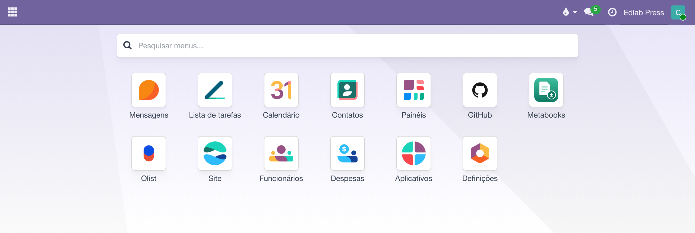

Arquivos no GitHub
O mesmo porteiro, na estante onde a produção versiona os originais: um repositório vira pasta, cada envio vira commit, cada revisão tem SHA — e o link compartilhado, pela primeira vez, não fura o portão.
Visão geral
Este app é um corpo do chassi Cloud Files — o mesmo do Dropbox e do Drive. A disciplina é herdada e idêntica: acesso por grupos pasta a pasta, multiempresa, espelho de metadados, tags e vínculos, mapear é de administrador, escrever exige grupo de escrita. O que muda é o vocabulário, traduzido do Git:
O GitHub é um app à parte, com tile própria na tela inicial — não uma seção dentro do Dropbox. E o que lá se chama Pastas, aqui se chama Repositórios: é a mesma tela, com o nome que o provedor usa. Quem procura "Repositórios" dentro do Dropbox não encontra.

| No Liber | No GitHub |
|---|---|
| Pasta | Um repositório (ID externo = dono/repositório), com subpasta opcional no campo Caminho (/ sozinho = a raiz) e Branch (vazio = a padrão). |
| Enviar | Um commit liber: arquivo.pdf na branch da pasta — um por arquivo: mandou cinco de uma vez, são cinco commits. Nunca sobrescreve: nome repetido vira arquivo (1).ext. |
| Revisão | O SHA do blob — versionamento de graça, mudou o conteúdo, mudou o SHA. |
| Link compartilhado | A página do arquivo no GitHub — só abre para quem enxerga o repositório. Por isso não expira: a ficha registra honestamente "sem validade". |

Configuração
A configuração acontece em dois lugares diferentes, e é fácil se perder entre eles porque os dois se chamam GitHub. Cada passo abaixo começa dizendo onde ele é: no site do GitHub, que é github.com no navegador, ou no Odoo, que é este sistema — onde GitHub é o nome de um app, com tile própria na tela inicial, ao lado do Dropbox e do Drive. Os dois primeiros passos são lá fora; os dois últimos, aqui dentro.
- no site do GitHub Gere um fine-grained personal access token em github.com/settings/personal-access-tokens/new. Ele não nasce na organização — o Developer settings dela só tem OAuth Apps, GitHub Apps e Publisher Verification. Nasce na conta pessoal de um membro da organização: foto do perfil‣Settings‣fim da barra lateral‣Developer settings‣Personal access tokens‣Fine-grained tokens.
- no site do GitHub No formulário do token, aponte a empresa: Resource owner = a organização (não a conta pessoal), Repository access nos repositórios que serão mapeados e Contents: Read and write nas permissões. Anote a validade — token vencido para sync e envio até que se cole um novo na Conta. Se a organização aparecer bloqueada ou o token ficar pendente, um owner libera em github.com/organizations/sua-organização/settings/personal-access-tokens (roteiro completo no NOTES.md do módulo).
- no Odoo Volte para este sistema. Na tela inicial, abra a tile GitHub — não a do Dropbox, que é outro app com telas de mesmo nome. Nela, preencha com o token e use Testar conexão. É uma conta por empresa, e só uma — o Odoo recusa a segunda. Ela guarda o token e serve a todos os repositórios daquela empresa: repositório novo não pede conta nova, pede uma linha nova no passo seguinte. O que muda lá fora, aí sim, é a seleção de repositórios do token, que precisa passar a incluir o repositório novo.
- no Odoo Ainda no app GitHub, como administrador, mapeie um repositório por vez em , no botão Novo. Repare que este menu só existe no app GitHub: no Dropbox e no Drive a mesma tela se chama Pastas, e mapear um repositório por lá cria uma pasta daquele outro provedor, que nunca vai falar com o GitHub. Os campos: Nome é o rótulo que a equipe lê no painel de pastas; ID externo é a identidade de máquina, dono/repositório (ex.: capela-liber/liber-erp) — só isso, sem https://github.com/ na frente e sem .git no fim; Caminho é a subpasta dentro do repositório que se quer espelhar, com / sozinho para a raiz; Branch vazio segue a branch padrão; e os grupos dizem quem lê e quem escreve. Depois, Sincronizar.
- no Odoo Dois repositórios da mesma empresa não podem dividir o mesmo Caminho. A trava de unicidade olha o Caminho, não o ID externo: se um repositório já está mapeado na raiz, o segundo na raiz é recusado com "Esta pasta já está mapeada para esta empresa" — mensagem que não diz o que de fato houve. Enquanto isso não muda, dê a cada repositório um Caminho próprio, ou mapeie subpastas distintas.
O dia a dia
Sincronizar espelha a árvore da branch (a subpasta mapeada, recursiva ou não); baixar desce pelo Odoo com o portão conferido; enviar commita pelo menu . Tags e vínculos com contatos e produtos são os mesmos da casa — um contrato no Dropbox e seus originais no GitHub apontam para o mesmo autor e o mesmo título.
O envio vai de braçada: o campo de arquivos do assistente aceita um ou muitos de uma vez — escolhidos no seletor do sistema ou arrastados para dentro dele —, e cada arquivo vira o seu próprio commit na branch da pasta. O Odoo não guarda cópia depois do envio e o espelho sincroniza na hora, já com os SHAs novos.

Quando o Sincronizar não acha o repositório
O erro é HTTP 404 — Not Found no /repos/dono/repositório, e ele mente por segurança: o GitHub responde 404, e não 403, para repositório privado que o token não alcança — porque um 403 confirmaria que ele existe. Então 404 tem duas leituras, e a mais comum na casa é a segunda:
| Leitura | Como confirmar |
|---|---|
| O ID externo está errado | Abrir github.com/dono/repositório no navegador, logado. Se a página abre, o nome está certo e o problema é o outro. |
| O token não alcança o repositório | É o caso quando o Resource owner do token ficou na conta pessoal em vez da organização. Um token assim lê os repositórios em que a pessoa é colaboradora e não enxerga os privados da organização — nem para dizer que existem. Refazer o token com o Resource owner na organização e o repositório em Only select repositories. |
Um 403 no lugar do 404 é outra conversa: o token alcança o repositório, mas falta Contents: Read and write. O cabeçalho x-accepted-github-permissions da resposta diz o que faltou.
Limitações conhecidas
- Sem miniaturas — baixar cada imagem só para encolher não vale a banda num host de código.
- Sem data de modificação por arquivo no espelho (seria uma chamada de API por arquivo; o SHA já denuncia mudança).
- Arquivos em LFS aparecem com o tamanho do ponteiro, não do conteúdo.
- Arquivos no Dropbox — a explicação completa da mecânica compartilhada.
- Arquivos no Google Drive — o corpo do Drive, para a equipe das planilhas.